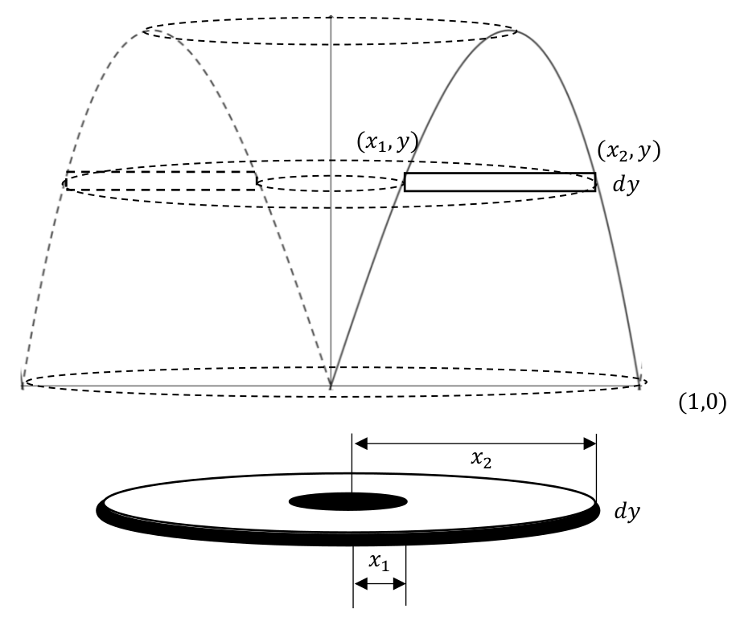
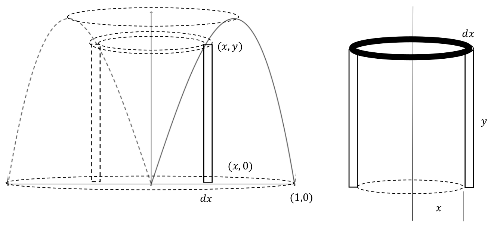
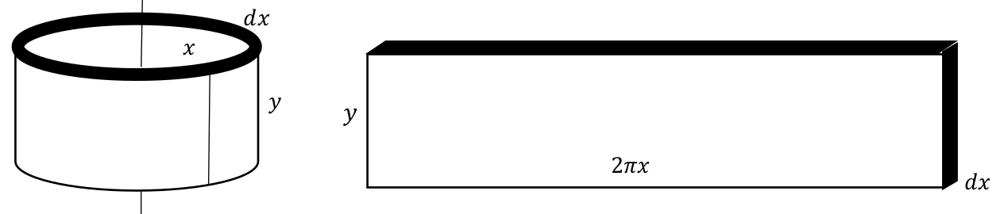
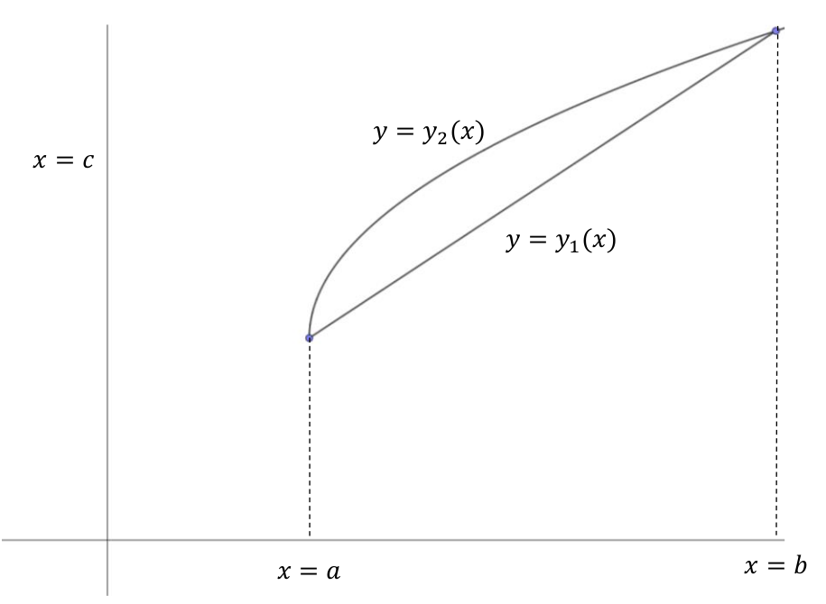
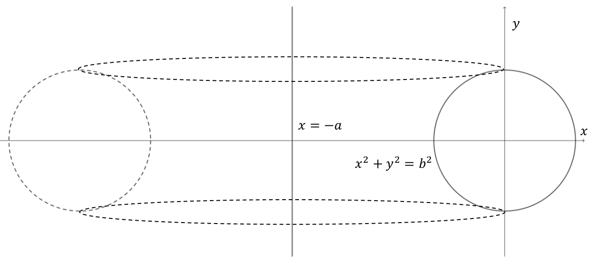
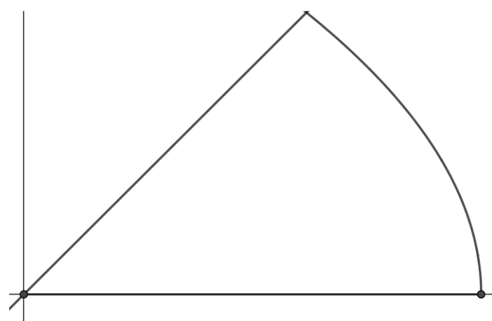
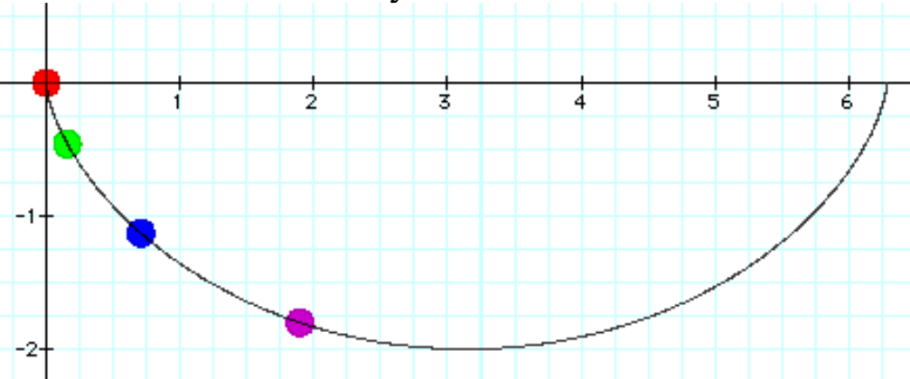
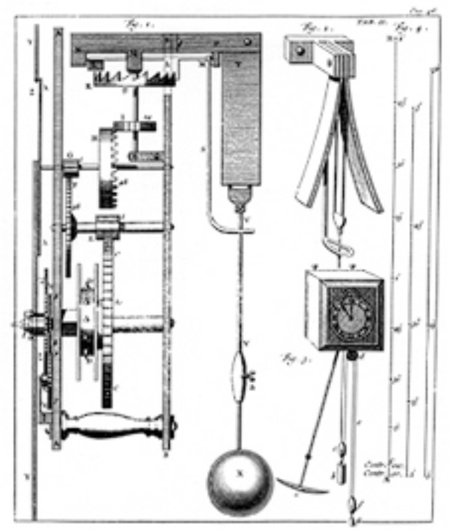
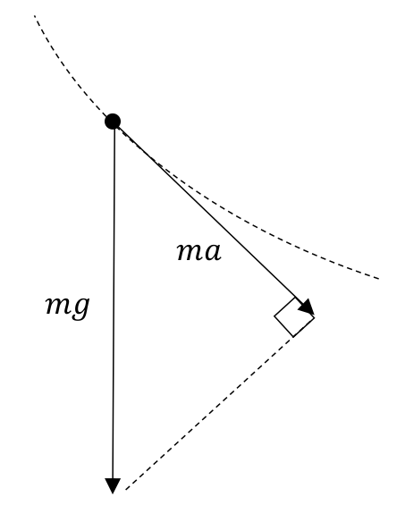
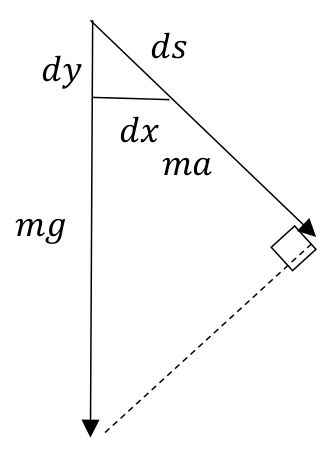

Section5.7Homework #12: Volumes by Shells and Kinetic Energy
As you no doubt noticed, when we had to compute the volume of a solid generated by revolving a region about the \(x\)-axis (or any horizontal line), we obtained an integral with \(dx\) in it, which meant that we would put everything in terms of \(x\text{.}\) Likewise, when we revolved about the \(y\)-axis, we had to put everything in terms of \(y\text{.}\) Sometimes this is not practical or leads to an undesirable integral. Consider the following example of the region bounded by \(y=0\) and \(y=3(x-x^3)\) revolved about the \(y\)-axis. Going through our set up (Yes, we must do it too!), we have the following generic rectangle revolved around to create a washer.

\begin{align*}
\text{Volume of washer}\amp{}=\text{Volume of
disk}-\text{volume of hole}\\
\amp{}=\pi x^2_2 \dx{y}-\pi x^2_1 \dx{y}\\
\amp{}=\pi
\left(x^2_2-x^2_1\right)\dx{y}
\end{align*}
This set up (with the picture) was really the easy part. The harder part is putting everything in terms of \(y\) and integrating. For instance, we would need to solve \(y=3(x-x^3)\) for \(x\) in terms of \(y\text{.}\) Furthermore, we would need to figure out the maximum value of \(y=3\left(x-x^3\right)\) on the interval \([0,1]\text{.}\)
All of this is doable, but inconvenient. What would be preferable would be to leave everything in terms of \(x\text{,}\) but this would entail drawing a vertical box instead.

If we were to treat the right-hand object as a very tall washer with inside radius \(x\text{,}\) outside radius \(x+\dx{x}\text{,}\) and height \(y\text{,}\) we would get its volume to be
Recalling our reasoning with the Product Rule, we can ignore \({\left(\dx{x}\right)}^2\) as it is infinitely small compared to \(\dx{x}\text{,}\) so that the volume of this tall washer is
If you feel as funny (or perhaps more) about ignoring the \({\left(\dx{x}\right)}^2\) as you did with the product rule, there is another way to look at this that might help your queasiness and provide a better way of remembering what to do in this situation. Basically, instead of calling the revolution of the generic rectangle a tall washer, we will call it a (cylindrical) shell. This sounds somewhat silly, but it really points out the difference. For a washer, the height is infinitesimal, whereas for a shell, the thickness of the wall is infinitesimal. For a physical analogy, this is the difference between an actual metal washer and a piece of metal tubing. To figure out the volume of the tubing (shell), we can slice it open and flatten it out into a rectangular piece of metal. This is not so easily done with a washer. This provides a shortcut (and device) for computing the volume of a shell; just compute the volume of the flattened version.

Using the flattened-out version, we have that the volume of the shell is given by
\begin{align*}
\text{Volume of a washer}\amp{}=\pi \left(x^2_2-x^2_1\right)\dx{y}=\pi
\left(x_2+x_1\right)\left(x_2-x_1\right)\dx{y}\\
\amp{}=2\pi
\frac{\left(x_2+x_1\right)}{2}\dx{y}\left(x_2-x_1\right)\\
\amp{}=\text{average
circumference}\cdot \text{height}\cdot \text{thickness}.
\end{align*}
While this is interesting geometrically, it does not help with computing an integral using washers.
Problem5.27.
Consider the following region bounded by the curves \(y=y_1(x)\) and \(y=y_2(x)\)

(a)
Draw and label a generic vertical rectangle in this region and draw and label the shell generated by revolving this rectangle about the vertical line \(x=c\) to the left of the region.
(b)
Compute the volume of this shell and integrate it to show that the volume of the solid generated by revolving the region about the line \(x=c\) is given by
In HW \# 11 we found the surface area of a torus formed a circle of radius \(b\text{,}\) whose center revolves around a line distance \(a>b\) away.
Specifically, consider the following torus generated by revolving the circle \(x^2+y^2=b^2\) about the line \(x=-a.\)

Use shells to show that the volume of this torus equals the area of the small circle times the circumference of the circle generated by revolving the center of this circle around the line.
Hint.
If you utilize what you already know about symmetry and areas, this problem can be done without having to actually compute an integral. Work smarter, not harder!
So, a natural question arises, “Which should I use, washers or shells?” The answer is that you can use either one; sometimes it is more convenient to use one over the other, other times it really doesn’t matter. The real question you need to ask in a particular problem is, ``Is it better to put things all in terms of \(x\) or in terms of \(y\text{.}\) This will determine if you want to utilize a vertical rectangle (of width \(\dx{x}\)) or a horizontal rectangle (of width \(\dx{y}\)). This will determine whether washers or shells are more appropriate.
Example5.28.

If we were to draw a vertical rectangle involving \(\dx{x}\text{,}\) then any integral would, of necessity, need to be divided into two separate integrals to compute, since the \(y\) coordinate of the upper point on the rectangle changes from one curve to the other. Utilizing, a horizontal rectangle would circumvent this problem. However, we would need to be prepared to put everything in terms of \(y\) instead of \(x\text{.}\) Luckily, these two equations don’t look that bad with regard to this. We would still need to find the point of intersection, but that would have been the case with a vertical rectangle as well.
Problem5.29.
Find the volumes of the solids generated by revolving this region about the \(x\)-axis and \(y\)-axis utilizing horizontal rectangles.
Other Applications
The Tautochrone You may have noticed that we keep bringing up the cycloid in a number of problems involving areas, arc lengths, volumes, and centers of mass. As we said, this curve has fascinated mathematicians for a long time and many of these elegant results were cleverly obtained before the invention of calculus. We will now see how the cycloid was utilized to address a more practical problem.
In the 1600’s there was race among naval “superpowers” (Britain, France, Spain, Holland, etc.) to develop a way of measuring longitude at sea. Measuring latitude was relatively easy and could be accomplished by measuring the angle of elevation of the sun or stars. Before longitude could be measured accurately, ships would sail until they reached the correct latitude of a destination and then sailed east or west until they hit the destination. As such, there were monetary prizes awarded for anyone who develop an accurate way of measuring longitude at sea. For example, the Longitude Act, issued in Britain in 1714 offered a prize of up to \(£20,000\) (about \(£5.1\) million or $\(6.1\) million in 2022 currency) for anyone who could measure longitude to an accuracy of half a degree.
Since longitude is measured by “time” zones, then it became necessary to develop an accurate way of measuring time at sea. A regular pendulum clock, invented by the Dutch mathematician, scientist, and inventor Christiaan Huygens (1629-1695), utilized the fact that the oscillation of a pendulum is regular as long as it maintains the same amount of “swing” per oscillation. This made for an accurate timepiece on land, but it was not accurate at sea where a moving deck would make the pendulum swing at different angles and thus not have a constant period. To remedy this, Huygens developed a pendulum that would follow a tautochrone (a “same time” curve where a pendulum, exclusively under the influence of gravity, following that path would take the same amount of time to reach the bottom, no matter where it started on the curve). Huygens showed that an inverted cycloid was such a tautochrone.

A pendulum following the path of an inverted cycloid will take the same amount of time to reach the bottom no matter where it starts.
Huygens then developed a pendulum clock which would do this. He published his work in 1673 in his book Horologium Oscillatorium: sive de motu pendulorum ad horologia aptato demostrationes geometricae (The Pendulum Clock: or geometrical demonstrations concerning the motion of pendula as applied to appears below.

To get the pendulum to swing along a cycloidal path, Huygen’s proved that if a flexible pendulum wraps around two flaps shaped like arches of a cycloid, then the bottom of the pendulum will trace a cycloid itself as seen below.
This curve traced out is called the involute (of the cycloid).
In practice, the clock did not work any more accurately than a regular pendulum clock as it assumed the only force involved was gravity, whereas a clock at sea was subject to many more forces which could not be ignored. Subsequently, the Englishman John Harrison (1693-1776), a Yorkshire carpenter, invented a chronometer which ran on springs and proved to be very accurate.
Even still, many mathematicians cited Huygens work on this as being very elegant mathematically. Furthermore, Huygens developed his mathematics without calculus as it hadn’t been invented (discovered?) yet. We will not prove that the involute of a cycloid is a cycloid, but we will utilize calculus to prove Huygens’ claim that the cycloid is, in fact, a tautochrone.
To start, recall that the speed at which the pendulum is traveling is given by \(v=\frac{ds}{dt}\) where \(s\) is the arc length traveled and \(t\) is time. For simplicity, we will let the radius of the circle generating the cycloid be \(\frac{1}{2}\text{.}\)
Problem5.30.
Show that the total time it takes for the pendulum to move along the (inverted) cycloid
At this point we’ve hit an impasse, as the speed of the pendulum \(v\) is not a constant. Gravity will cause the pendulum to speed up as it swings downward. We will assume that the pendulum does not swing too wide, not too fast, and ignore air resistance. Thus, the only force we will consider is due to gravity and we will denote that by \(mg\text{,}\) where \(m\) is the mass of the pendulum and \(g\) is the acceleration due to gravity. Below is a diagram of a pendulum following the path of a cycloid with the forces at work.

The force due to gravity is always directed downward, so only a portion of it moves the pendulum along the curve. This tangential force has a magnitude \(ma\) where \(a=\frac{dv}{dt}\) is the (tangential) acceleration and is obtained by projecting the gravitational force onto the tangent line to the curve. If we draw a differential triangle, we have the following similar triangles.

Problem5.31.
(a)
Use the fact that the two triangles are similar to show that \(g\dx{y}=ads\) and use the fact that \(a=\frac{dv}{dt}\) to conclude that
\begin{equation*}
g\dx{y}=v
dv.
\end{equation*}
(b)
Integrate both sides from \(\theta ={\theta }_0\) to \(\theta \) to show that if the pendulum starts from rest at \(\left(x\left({\theta }_0\right), y\left({\theta
}_0\right)\right)\text{,}\) then the velocity at any point \((x\left(\theta \right), y\left(\theta \right))\) is given by
so our formula for the total time traveled by the pendulum from \(\left(x\left({\theta }_0\right), y\left({\theta
}_0\right)\right)\) to \(\left(\frac{\pi }{2}, 1\right)\) becomes
As formidable as this integral may look, bear in mind that \({\theta }_0\) is a constant. Also, this looks ripe for a substitution to make it easier on the eyes. Specifically, what if we let \(u={\cos \left(\frac{\theta }{2}\right) }\)and \(u_0={\cos \left(\frac{{\theta }_0}{2}\right)
}\)
Problem5.32.
Perform this substitution and show that the time traveled by the pendulum from \(\left(x\left({\theta }_0\right),
y\left({\theta }_0\right)\right)\) to \(\left(\frac{\pi
}{2}, 1\right)\) is given by \(\frac{\pi }{\sqrt{2g}}\) which is independent of the starting point \(\left(x\left({\theta }_0\right), y\left({\theta
}_0\right)\right)\text{.}\) Thus, the cycloid really is a tautochrone.
Work and Kinetic Energy
If you go back to our proof that the cycloid is a tautochrone, you will notice that we had the equation
The left-hand side is called the work done by gravity moving an object from the height \(y({\theta }_0)\) to the height \(y(\theta )\) and the right-hand side is called the change in kinetic energy from the beginning point \(\left(x\left({\theta }_0\right),y\left({\theta
}_0\right)\right)\) to the terminal point \(\left(x\left(\theta \right),y\left(\theta \right)\right)\text{.}\) So, this equation really says that
\begin{equation*}
work=\text{change in kinetic energy}
\end{equation*}
At some point, you may have heard the expression that energy is the ability to do work. Kinematically, this is what we just showed. We will explore these two concepts in more detail to apply them to some natural questions that arise from things we did before.
Work and Kinetic Energy
Suppose we apply a force of \(5\) newtons to move an object 2 meters (in that direction), then we will have done \(5\cdot
2=10 \) newton-meters (joules) of work. In general, if we apply a force with magnitude \(F\) newtons to move an object \(m\) meters in the direction of the force, then the amount of work done by that force is \(W=F\cdot m\) newton-meters. As stated in the example above, \(mg\left(y\left(\theta
\right)-y\left({\theta }_0\right)\right)\) was the amount of work done by gravity moving a mass from a height of \(y\left({\theta }_0\right)\) to a height of \(y(\theta
)\text{.}\) Notice the \(x\) coordinate didn’t matter as the direction of the force was along the \(y\) axis. But what if we are not traveling in a straight line?
Problem5.33.
Suppose we have a (tangential) force \(F\) moving a mass \(m\) moving along a curve \(C\) from point \(A\) to point \(B\text{.}\) Let \(P\) denote a generic point on the curve. Let \(s\) denote arc length from point \(A\) to \(P\) and \(v=\frac{ds}{dt}\) represent velocity (speed) and \(a=\frac{dv}{dt}=\frac{d^2s}{dt^2}\) acceleration. Using Newton’s Second Law which states that force \(F=ma=m\left(\frac{dv}{dt}\right)\text{,}\) we have that the work \(w\) done by \(F\) to move the mass from \(x=x_0\) to \(x=x_1\) is given by
Note that the kinetic energy \(\frac{1}{2}mv^2\) is measured in \(kg\cdot
{\left(\frac{\text{meter}}{\text{second}}\right)}^2=\left(kg\cdot
\frac{\text{meter}}{{\text{second}}^2}\right)\text{meters}=\text{Newton
meters}\text{.}\)
(b)
The Richard F. Caris Mirror Laboratory at the University of Arizona uses a revolving oven to “spin cast” large parabolic mirrors for reflective telescopes. They load borosilicate glass which has a density of \(2230\frac{\text{kilograms}}{\text{meter}^3}\) into the furnace and start spinning the furnace. Let’s assume that the glass is a disk which measures \(4 \text{
meters} \) in radius and is \(10 \text{ cm}\) thick.
Compute the kinetic energy of the disk when it is rotating around its axis at a rate of \(2\frac{\text{revolutions}}{\text{second}}\text{.}\)
(c)
Suppose you have a 100 horsepower motor that produces \(73505\frac{\text{Newton meters}}{\text{second}}\) of power. How long will it take (in minutes) for this motor to accelerate the disk from rest to \(2\frac{\text{revolutions}}{\text{second}}\) ?